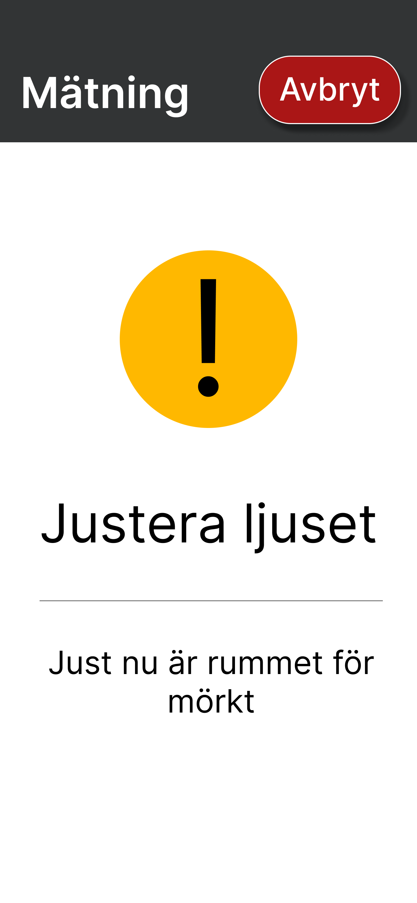
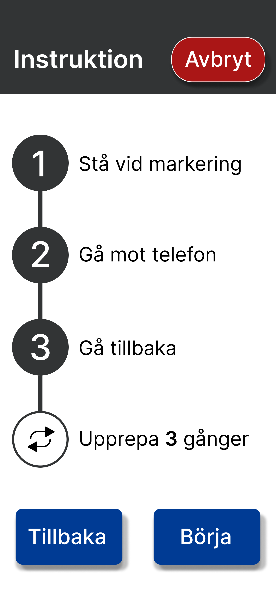
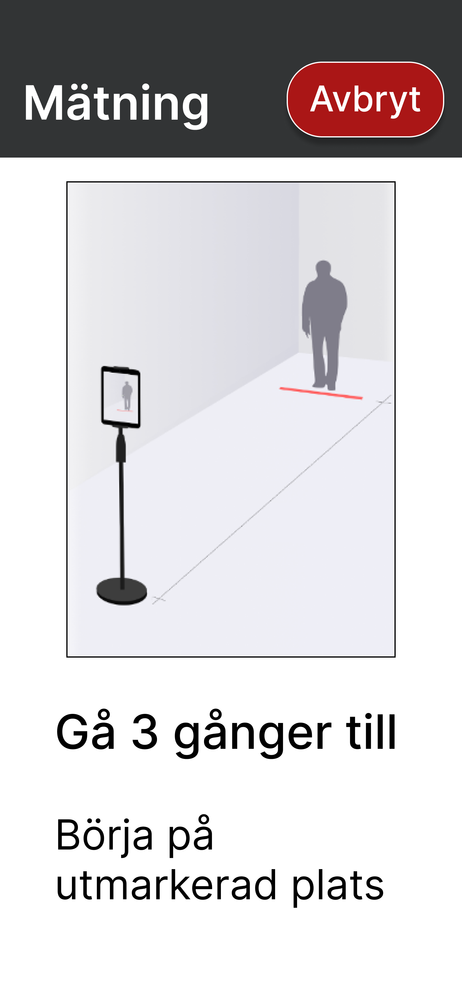
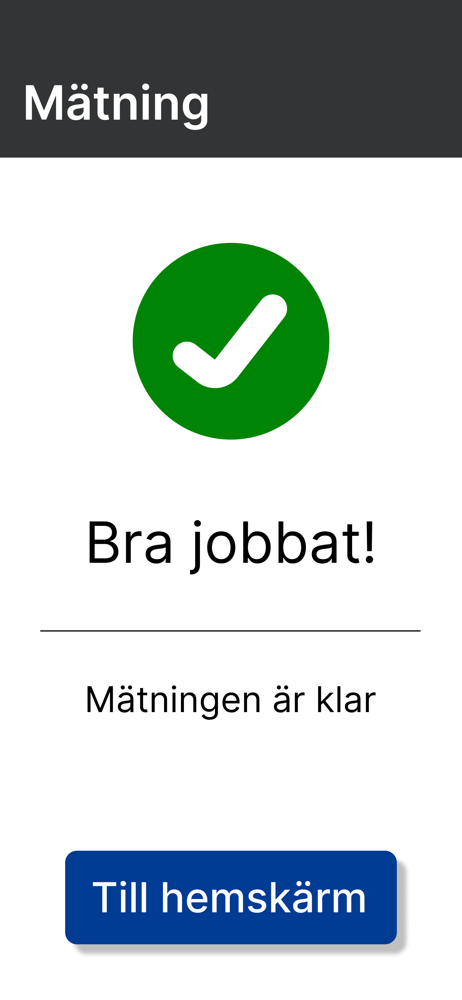
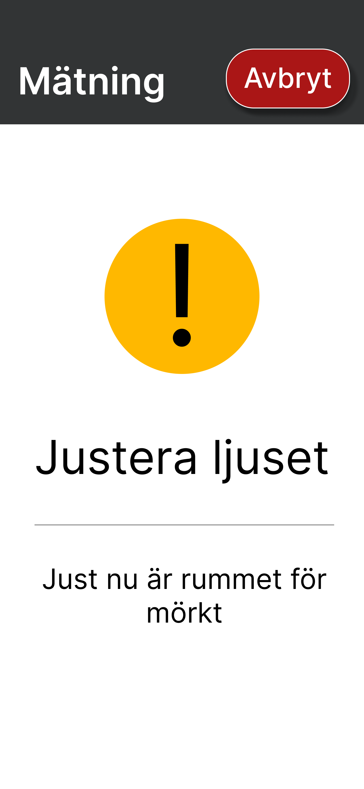
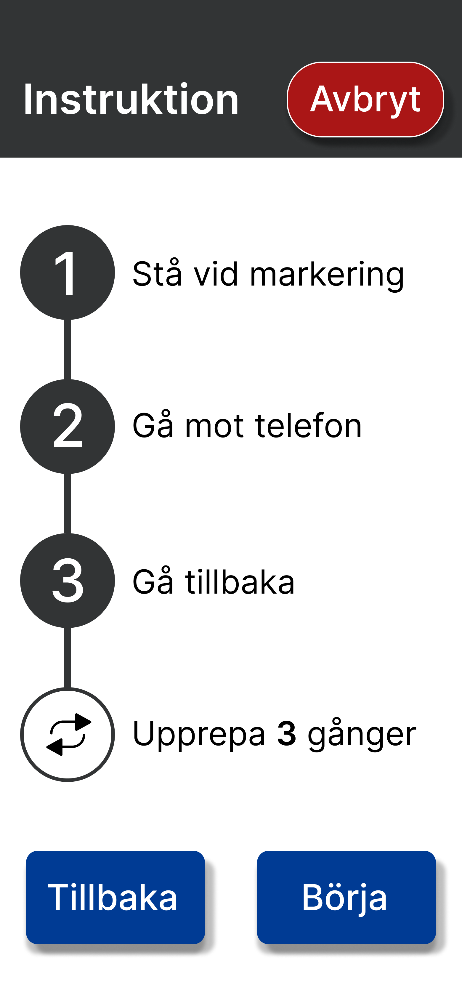
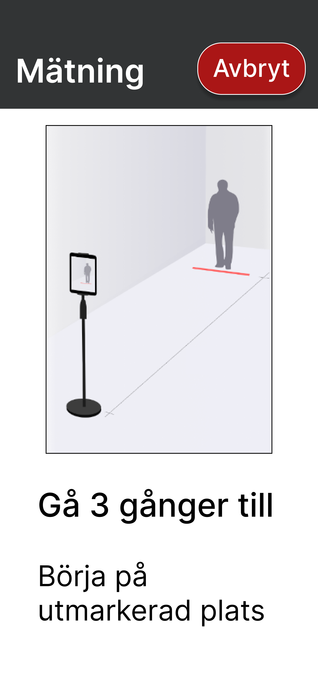
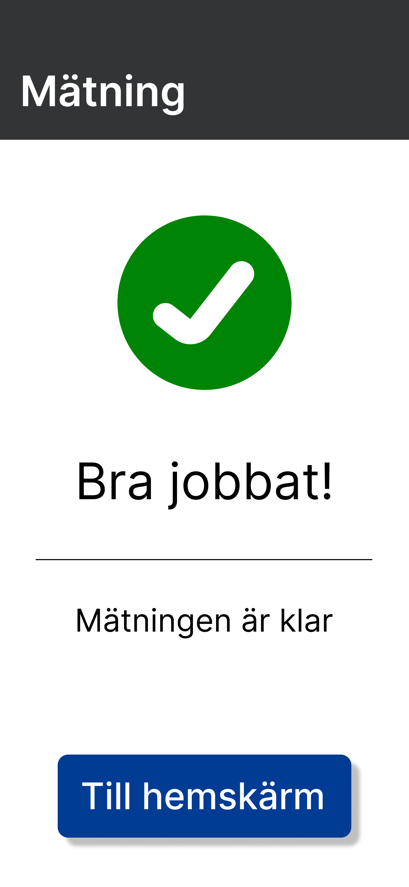

With this application, users can measure their walking speed at home for medical purposes.
This makes it easier to track progress and helps in diagnosing certain conditions. When users open the app,
they can easily start a measurement without needing to remember every step, as the application provides clear
reminders and guidance throughout the process.
The app is paired
with a LiDAR sensor, since a phone alone cannot
measure walking speed accurately enough to be used in a medical setting.
The development of this interface was part of a larger research project at the University Hospital in Umeå, and also formed a part of my Bachelor's thesis.
The aim was to reduce the need for patients to visit the hospital just for basic assessments that could just as easily be done at home.
The challenge was to design something simple enough to be used
by individuals with various cognitive impairments,
making it especially important that every element is clearly visible and easy to interact with.
 






